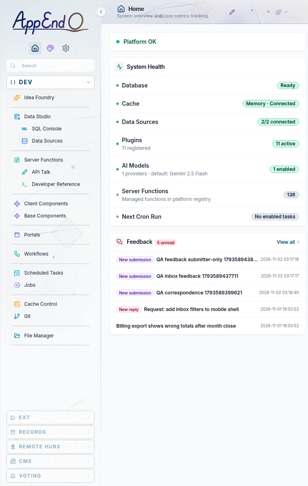
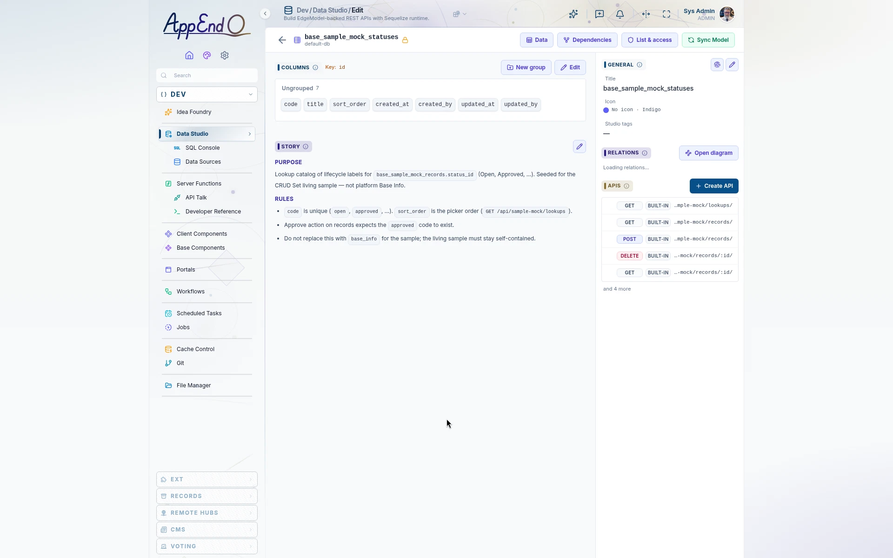
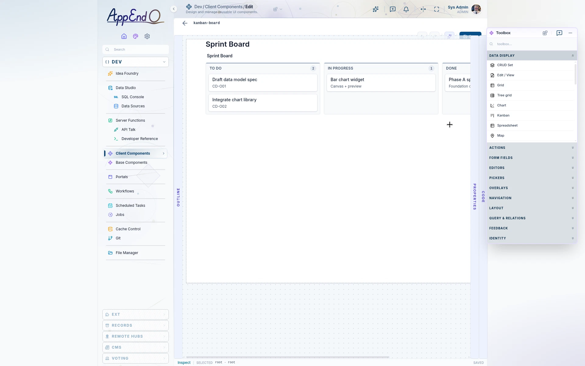
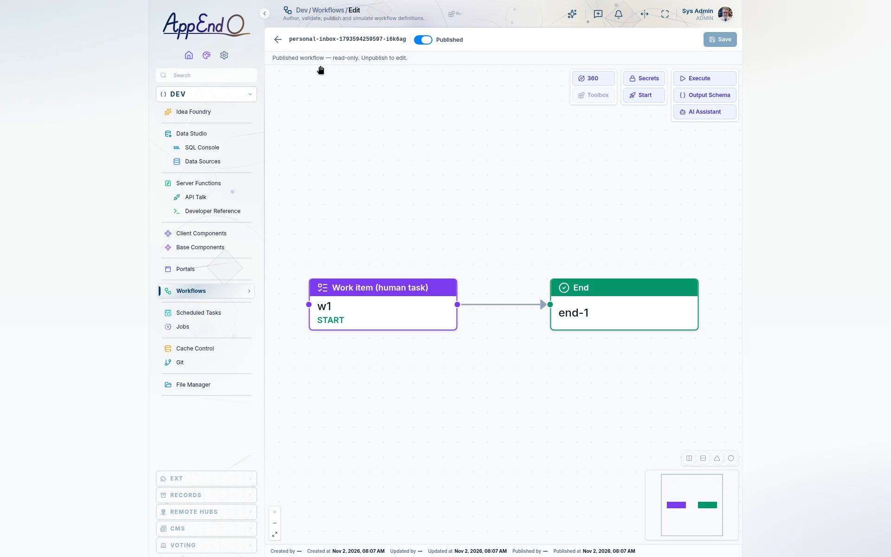
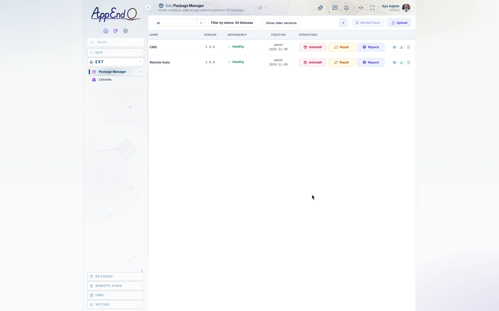
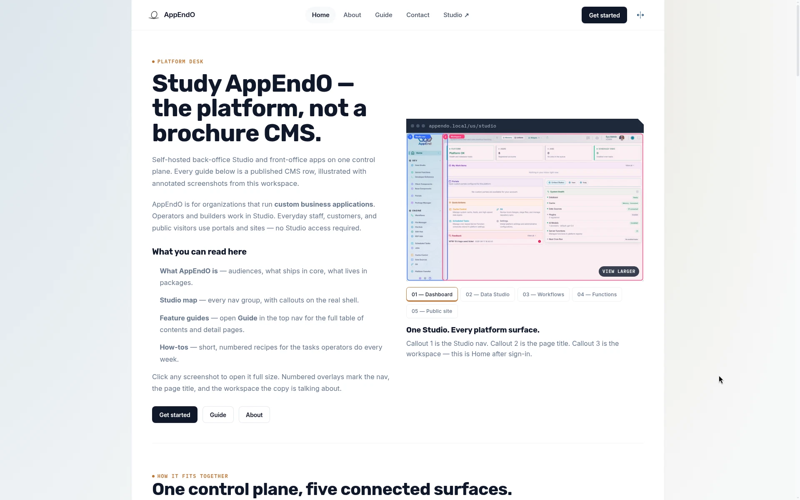
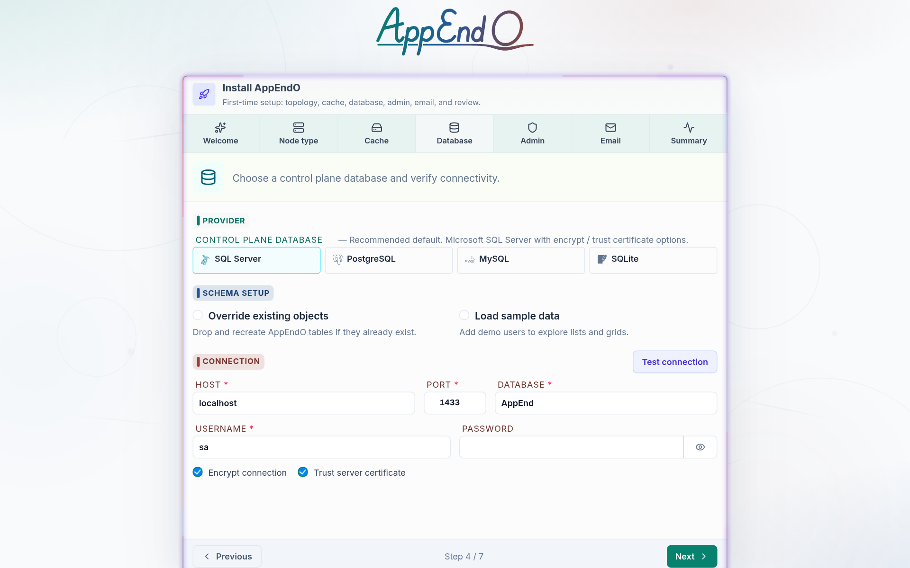
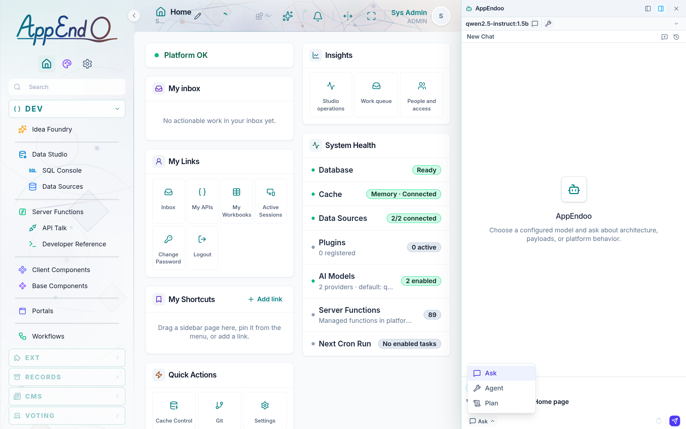

One platform, two audiences
Builders and operators use the back-office studio. Staff, customers, and public visitors use front-office portals — no studio access required.
Self-hosted enterprise platform
AppEndO is for organizations that run custom business applications. Operators and builders work in the studio — Data Studio, workflows, RBAC, packages, and an in-app AI/MCP agent. Everyday users get portals, forms, and self-service pages. It is platform-first: not a blogging CMS, and not an out-of-the-box ERP.
Node.js 22 · React · Express · SQL Server default (PostgreSQL, MySQL, and SQLite on the wizard)
These are capabilities that already ship in the core install or the public release bundles — not a roadmap dressed up as a product.
Builders and operators use the back-office studio. Staff, customers, and public visitors use front-office portals — no studio access required.
Data Studio and Data APIs, Client Components and CRUD Set, Server Functions, a workflow engine, a Git workspace, and ZIP packages are part of the platform.
Run it on your infrastructure. SQL Server is the default and recommended control plane; the wizard also offers PostgreSQL, MySQL, and SQLite.
The public release bundles CMS and Remote Hubs (File, SSH, and RDP). Domain modules such as CRM or HR are ecosystem packages, not pretends-to-be-an-ERP on day one.
Experiences route by culture, portal, and page. Culture packs for the United States, Iran, and Iraq ship as system extensions (locale, calendar, direction, and fonts).
AppEndO Agent (Ask, Plan, or Agent) ships with 16 built-in MCP packs, designer-local AI, and an inbound MCP host.
Captures from a running studio, the install wizard, and a public CMS page. Home is a narrow crop, so it sits beside Data Studio at its own width.






/us route.

You need Node.js 22 and a control-plane database. The browser install wizard is the recommended first-run path. SQL Server and PostgreSQL are the human-tested engines; MySQL coverage is still thin, and SQLite is machine-tested.
git clone https://github.com/mirshahreza/AppEndO-Release.git
cd AppEndO-Release/source
cp .env.example .env
npm install
npm run devOpen http://localhost:3000/install. The wizard walks through node capabilities, cache, database, admin account, and optional email, then applies schema and opens the studio. The release also includes a pre-built dist/server.cjs if you prefer not to rebuild.
AppEndO is not a substitute for WordPress (content marketing), Odoo (a full ERP), or Supabase (managed BaaS). Closest relatives are low-code platforms such as Oracle APEX. Unlike typical internal-tools builders, it also targets public portals and vertical apps. This table is qualitative; vendor prices in the project README were last verified on 29 June 2026 and should be re-checked before any public pricing claim.
| AppEndO | Retool | Odoo | Oracle APEX | Supabase | |
|---|---|---|---|---|---|
| What it is | Self-hosted studio + portals | Internal-tools builder (mostly SaaS) | ERP / business suite | Low-code on Oracle Database | Backend-as-a-service |
| Visual UI builder | Yes, in core | Yes — the product is the builder | Odoo Studio | Page Designer in core | No — frontend is built elsewhere |
| Workflows | Designer + durable runtime in core | Plan-dependent | Automated actions + Studio | Approvals / processes in APEX | External / Edge Functions |
| Public portals | First-class front-office | Mostly internal users | Yes, with ERP modules | Yes, APEX apps | You assemble it yourself |
| LOB modules on day one | No — ecosystem packages (CMS ships here) | No | Yes | No | No |
Source, a production build, and the bundled CMS and Remote Hubs packages live on GitHub. The tree is source-available under a custom license (Apache 2.0 text plus Section A). It is not an OSI-approved open-source license. You may self-host and operate official portals for your organization, but public Internet hosting of a platform fork is not allowed. Questions and contributions go through GitHub Issues — there is no project email.